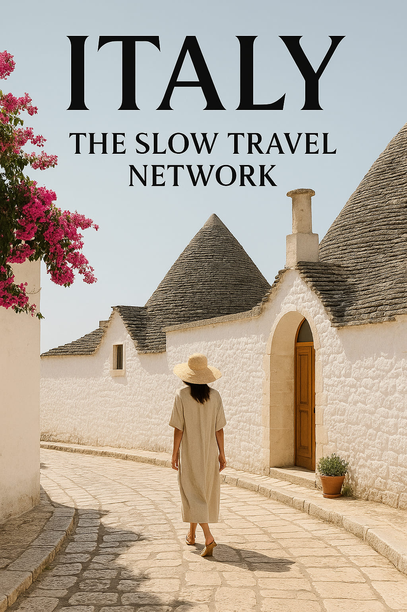

Italy Introduces National Slow Tourism Network, Starting in Puglia
Today, Italy officially announced the creation of a nationwide “slow tourism” network — a bold cultural and economic initiative aimed at redefining how travelers move through the country. In an era dominated by fast-paced itineraries and overcrowded destinations, this new direction offers an intentional shift: more depth, less rush. And it begins where the light lingers longest — in Puglia.
The announcement, made by the Ministry of Tourism in Rome, lays the groundwork for what they’re calling “Le Vie Lente” (The Slow Ways): a curated set of walking routes, coastal towns, and heritage-based lodging options that promote sustainability, aesthetics, and regional storytelling.
Puglia as the Starting Point
“Puglia was an obvious choice,” said Elena Rinaldi, spokesperson for the initiative. “Its visual identity — whitewashed villages, olive groves, terra-cotta tones — is perfect for travelers seeking beauty and balance.”
The region’s first “slow travel corridor” connects the towns of Locorotondo, Alberobello, and Ostuni via marked trails, with rest points in converted masserie (rural farmhouses) and artisanal workshops along the way. Travelers will be encouraged to move primarily by foot, bike, or electric shuttle — not car or bus.
“Italy’s soul is not in its speed — it’s in its slowness.” — Italian Ministry of Tourism
A New Way to See Italy
The launch comes as major cities like Venice and Florence continue to battle overtourism. Instead of fighting crowds, this new network channels them into new paths — both literally and visually. Regions like Basilicata, Umbria, and Friuli Venezia Giulia are scheduled to follow in the next rollout phase.
Each route will feature:
- Designer-mapped walking trails with minimal signage
- Editorial-style digital guides with curated visuals
- Local partners including food artisans, textile makers, and boutique hotels
- QR-based “visual passports” where travelers can collect impressions instead of stamps
Visual Culture at the Forefront
Unlike traditional tourism campaigns, Italy’s slow travel network places visual culture front and center. The project’s branding, created in collaboration with art director Beatrice Corsi, mirrors the elegance of a fashion campaign: minimalist fonts, muted palettes, and photography inspired by lifestyle magazines.
The goal? To seduce through slowness.
Design Meets Direction
Many of the project’s waypoints are intentionally scenic. One path through Matera will wind past natural stone dwellings and cinematic viewpoints used in films like *No Time to Die* and *The Passion of the Christ*. Another in Lecce stops at restored palazzi now functioning as ceramic ateliers or fashion pop-ups.
It’s not tourism. It’s design-driven discovery.
Why Now?
Post-pandemic travelers are different. According to a recent European Commission survey, 64% of young travelers say they now prefer “slower, more meaningful travel.” Italy is betting on that trend becoming permanent.
“We don’t want to sell you Italy in 3 days. We want to invite you to live it in 3 layers,” said Rinaldi, referencing the initiative’s slogan: “Lento è Lusso” (Slow is Luxury).
Looking Ahead
The campaign launches across digital and physical channels starting this week, with the first travelers embarking on the Puglia routes by mid-June. The Ministry plans to add 12 more routes before summer 2026.
In a world that celebrates more, faster, sooner — Italy just took a different road. And it looks absolutely beautiful.
Words by Style Atlas